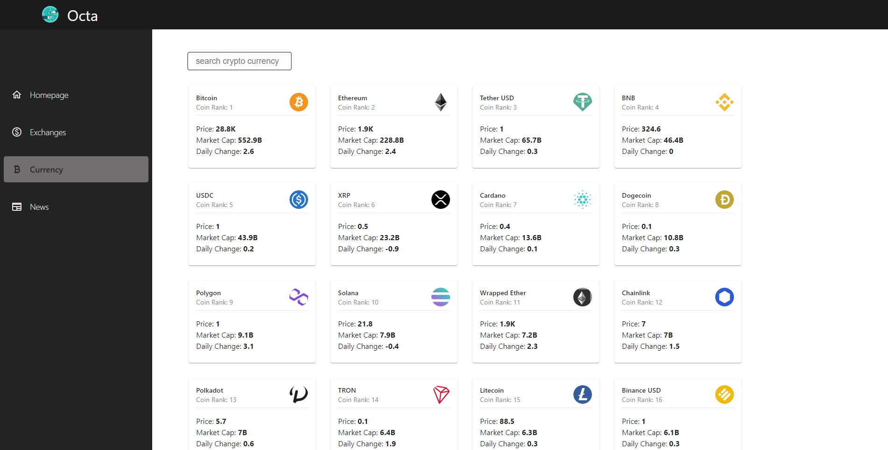

Octa cryptoApp
Built with: HTML, CSS, MaterialUI, Material-icons, JS, React, Redux, RTKQuery, chartJS, SASS, Restful Api/rapidApi
Octa cryptoApp was built to give information on the market performance of the different cryptocurrencies as well related news articles. This app utilizes chartJS to give a visual representation of statistical data to help influence purchase decisions. This project demonstrate my ability to use react, redux and RTK Query consume Api data. It also demonstrates my ability to use material UI and other skills listed above.